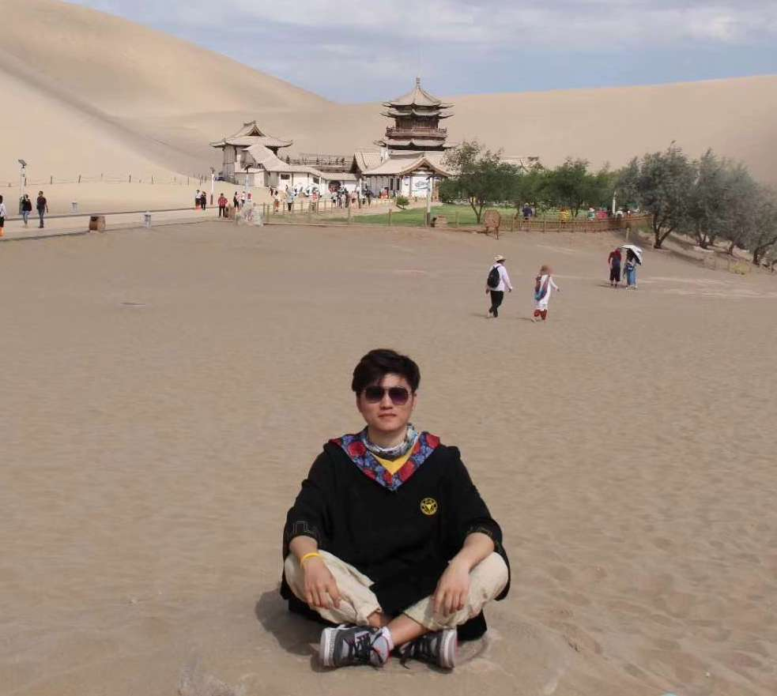
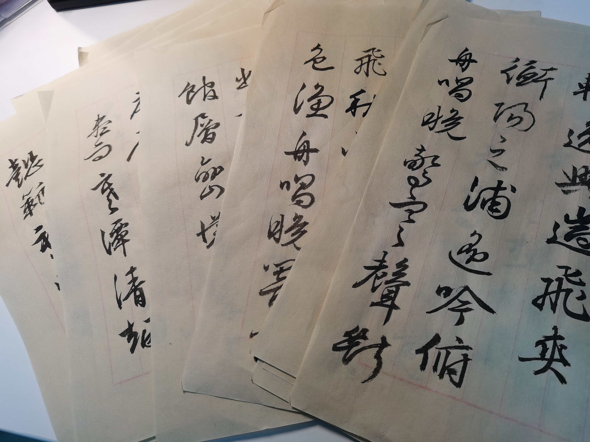
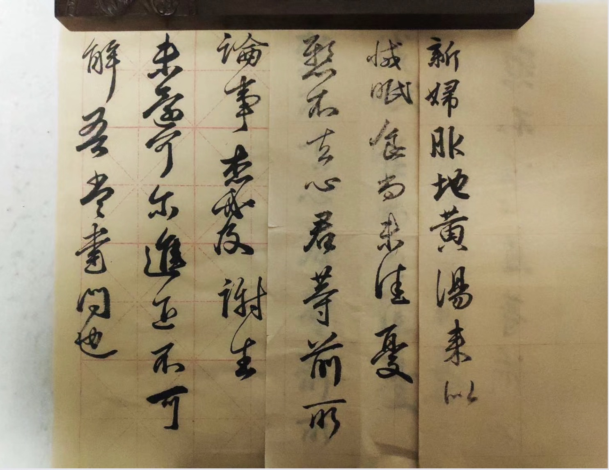

Hi there!
I am a third-year Ph.D. student at the School of Software Technology (SST) at Zhejiang University, supervised by Prof. Yi Yang.
I received my B.E. degree from the college of Control Science and Engineering (CSE) at Zhejiang University in 2019. I spent two more years (2019 - 2021) in CSE as a postgraduate before transferring to CST for pursuing a Ph.D..
My research interest primarily includes generalizable 3D reconstruction and 3D generation.
I am currently a research intern in Alibaba DAMO Academy.
I am also looking for self-funded visiting student position.

xiaopan@zju.edu.cn
School of Software Technology
Zhejiang University
Hangzhou, China
Publications
Peer-reviewed- [ICCV 2023] TransHuman: A Transformer-based Human Representation for Generalizable Neural Human Rendering
Xiao Pan, Zongxin Yang, Jianxin Ma, Chang Zhou, Yi Yang
- [PR 2023] Dynamic Gradient Reactivation for Backward Compatible Person Re-identification
Xiao Pan, Hao Luo, Weihua Chen, Fan Wang, Hao Li, Wei Jiang, Jianming Zhang, Jianyang Gu, Peike Li
- [ACM MM 2022] In-N-Out Generative Learning for Dense Unsupervised Video Segmentation
Xiao Pan, Peike Li, Zongxin Yang, Huiling Zhou, Chang Zhou, Hongxia Yang, Jingren Zhou, Yi Yang
- [KBS 2022] SFGN: Representing the Sequence with One Super Frame for Video Person Re-identification
Xiao Pan, Hao Luo, Wei Jiang, Jianming Zhang, Jianyang Gu, Peike Li
- [arXiv 2024] GD^ 2-NeRF: Generative Detail Compensation via GAN and Diffusion for One-shot Generalizable Neural Radiance Fields
Xiao Pan, Zongxin Yang, Shuai Bai, Yi Yang
Education
B.E. College of Control Science and Engineering, Zhejiang University, 2015 - 2019
M.E. College of Control Science and Engineering, Zhejiang University, 2019 - 2021
Ph.D. School of Software Technology, Zhejiang University, 2021 - Present
Selected Awards
Miscs
I started to play ErHu (one of the most ancient Chinese traditional instruments with two strings) when I was 4 years old, taught by my father.
I was the head and concert master of Wenqin National Orchestra of Zhejiang University, where I spent 6 enjoyable years (2015 - 2021) and made many friends for life.

I am interested in Chinese calligraphy, and practice it sometimes.
 
I also take photographs in my spare time.